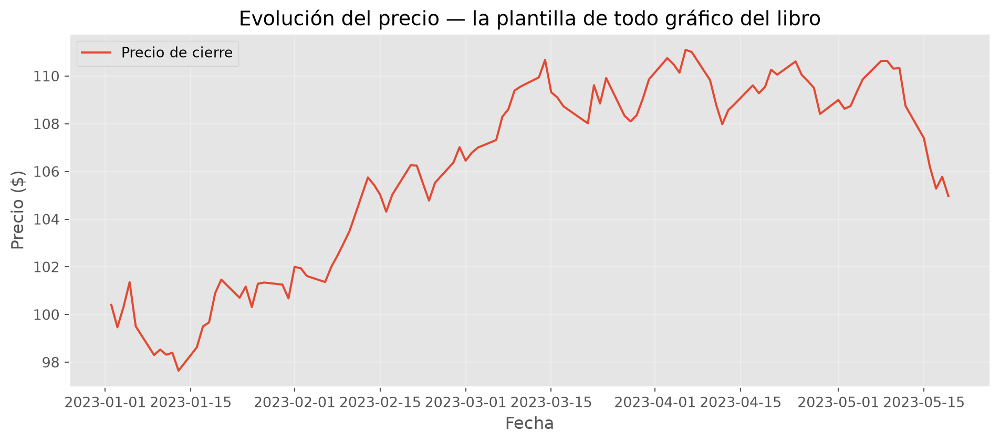
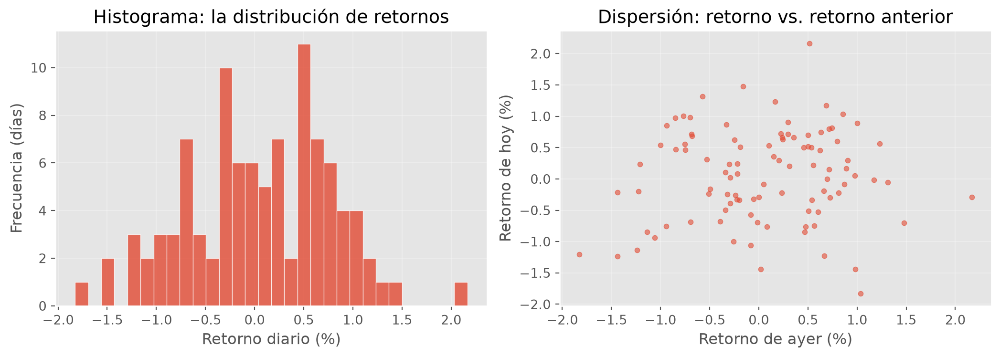
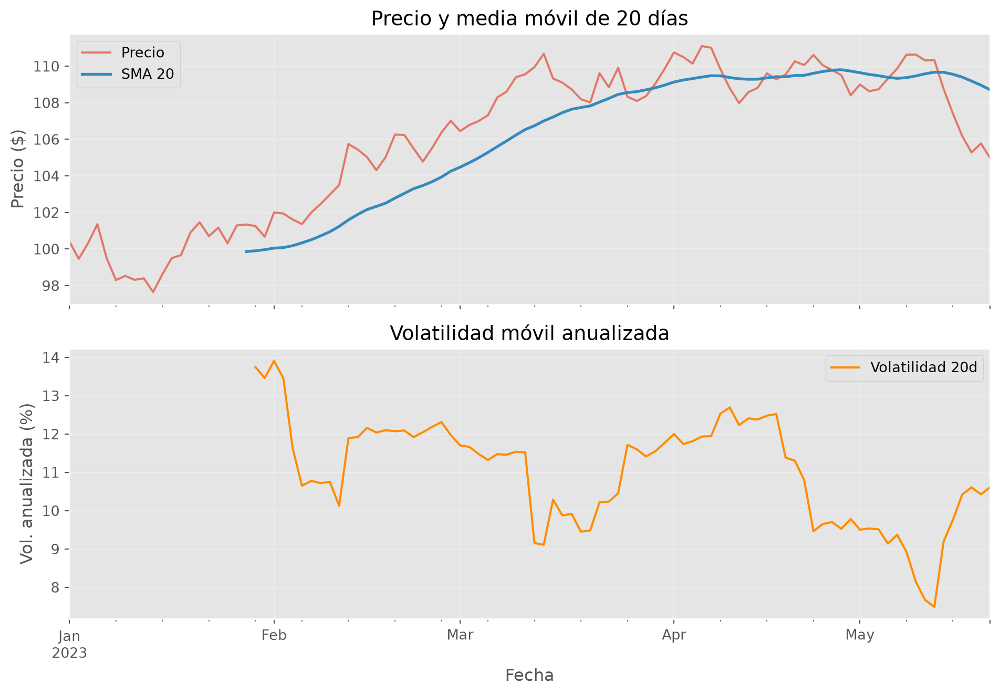
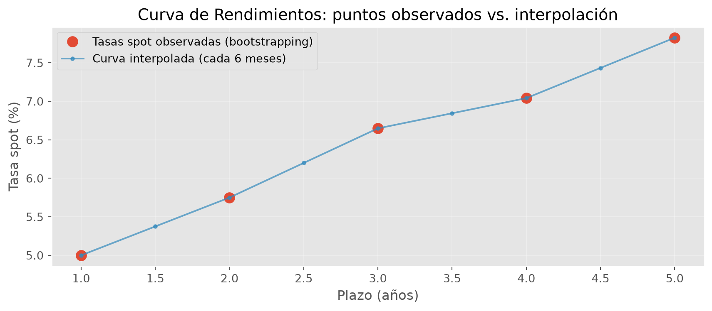

import pandas as pd
import numpy as np
import matplotlib.pyplot as plt
# Configuración estética para los gráficos
plt.style.use('ggplot')6 Capítulo 6: Series de Tiempo y Análisis de Datos con Pandas
Estructuras de Datos, Manipulación y Cálculos Financieros
Resumen
Introducción a pandas como herramienta fundamental para la carga, limpieza y análisis de datos en finanzas. Estudiamos Series y DataFrames, manipulación de series temporales, cálculos vectorizados de retornos, ventanas móviles y visualización técnica.
7 Introducción
En el capítulo anterior descubriste el poder de NumPy, pero también su limitación: los arrays no tienen etiquetas. R[:, 0] es “la columna 0”, y vos tenés que acordarte de que esa columna es el GD30 y de que la fila 40 es el 3 de marzo. Con dos activos se tolera; con doscientos activos y diez años de fechas, es inmanejable.
Pandas resuelve exactamente eso: pone nombres de columnas y un índice (típicamente de fechas) encima de los arrays de NumPy. No es una librería nueva que aprender desde cero — es NumPy con etiquetas: la vectorización, el broadcasting y las máscaras booleanas que ya dominás funcionan igual. Lo que se agrega es la maquinaria para el trabajo diario con datos financieros reales: leer archivos, alinear fechas, rellenar feriados, calcular retornos y ventanas móviles, agrupar por sector.
Este capítulo recorre esa maquinaria y cierra integrando todo en un caso real de renta fija: construir la curva de rendimientos a partir de precios de bonos.
8 Las estructuras: Series y DataFrames
Pandas se integra perfectamente con el ecosistema que venimos usando (NumPy y Matplotlib). Sus dos estructuras centrales son la Serie (1D) y el DataFrame (2D).
8.1 Series (1D)
Una Serie es un array unidimensional con un índice de etiquetas. Compará con el array de NumPy: ahí el “lunes” era la posición 0 y tenías que recordarlo; acá el dato lleva puesta su etiqueta.
precios_serie = pd.Series([110, 112, 108, 115, 120],
index=["Lunes", "Martes", "Miércoles", "Jueves", "Viernes"],
name="Precios")
print(precios_serie)
print(f"\nMedia: {precios_serie.mean():.2f}")
print(f"Desvío estándar: {precios_serie.std():.2f}")Lunes 110
Martes 112
Miércoles 108
Jueves 115
Viernes 120
Name: Precios, dtype: int64
Media: 113.00
Desvío estándar: 4.69Fijate la salida: cada precio aparece junto a su día, y los métodos estadísticos (mean, std) vienen incorporados — no hace falta importar nada más. El desvío de ~4.6 sobre una media de 113 nos dice que esta serie se mueve alrededor de un 4% por día: volátil.
8.2 DataFrames (2D)
Un DataFrame es la estructura tabular (filas y columnas) que vas a usar el 90% del tiempo. Técnicamente, cada columna es una Serie, y todas comparten el mismo índice. Armemos una tabla de bonos soberanos argentinos:
datos = {
"Ticker": ["GD30", "GD35", "GD38", "GD41", "GD46"],
"Precio": [92.5, 85.3, 78.1, 72.4, 65.8],
"Cercanía": [0.08, 0.07, 0.065, 0.06, 0.055]
}
df = pd.DataFrame(datos)
print(df) Ticker Precio Cercanía
0 GD30 92.5 0.080
1 GD35 85.3 0.070
2 GD38 78.1 0.065
3 GD41 72.4 0.060
4 GD46 65.8 0.055Un diccionario de listas se convierte directamente en tabla: las claves son las columnas. Notá el patrón financiero en los datos: a mayor plazo del bono (GD30 → GD46), menor precio — el tiempo descuenta.
8.3 Exploración Inicial
Regla de oro del análisis de datos: antes de calcular nada, mirá qué tenés. Pandas trae cuatro métodos de inspección que deberían ser tu reflejo automático al cargar cualquier dataset:
print(f"Dimensiones: {df.shape}")
print(f"Columnas: {df.columns.tolist()}\n")
# head(): las primeras filas — ¿los datos tienen la pinta esperada?
print(df.head(3))
# describe(): estadísticas rápidas — ¿hay valores absurdos? ¿escalas raras?
print()
print(df.describe().round(2))Dimensiones: (5, 3)
Columnas: ['Ticker', 'Precio', 'Cercanía']
Ticker Precio Cercanía
0 GD30 92.5 0.080
1 GD35 85.3 0.070
2 GD38 78.1 0.065
Precio Cercanía
count 5.00 5.00
mean 78.82 0.07
std 10.49 0.01
min 65.80 0.06
25% 72.40 0.06
50% 78.10 0.06
75% 85.30 0.07
max 92.50 0.08head() responde “¿cargué lo que creía?” y describe() responde “¿hay algo raro?” (un precio negativo, un máximo ridículo, menos filas que las esperadas delatan problemas de carga). Completan el kit df.tail() (últimas filas — útil para ver si la serie llega hasta la fecha esperada) y df.info() (tipos de datos y memoria — clave para detectar números que se cargaron como texto).
9 Lectura, Escritura y Alineación de Datos
9.1 I/O de Archivos
En la práctica, los datos no se tipean a mano: llegan en archivos (CSV, Excel) exportados de un sistema o descargados de un proveedor. Pandas lee y escribe todos los formatos usuales (read_csv, read_excel, to_csv, to_excel). Hagamos el ciclo completo — guardar nuestra tabla de bonos y volver a leerla — que es además la forma de verificar que entendés el formato:
import tempfile, os
# Escribimos el DataFrame a un CSV (separador ; como es usual en la región)
ruta = os.path.join(tempfile.gettempdir(), "bonos.csv")
df.to_csv(ruta, sep=";", index=False)
# Y lo volvemos a leer
df_leido = pd.read_csv(ruta, sep=";")
print(df_leido)
print(f"\n¿La ida y vuelta preservó los datos? {df.equals(df_leido)}") Ticker Precio Cercanía
0 GD30 92.5 0.080
1 GD35 85.3 0.070
2 GD38 78.1 0.065
3 GD41 72.4 0.060
4 GD46 65.8 0.055
¿La ida y vuelta preservó los datos? TrueDos parámetros de read_csv que vas a usar constantemente con series de tiempo: parse_dates=["Fecha"] (convierte la columna a fechas de verdad en lugar de texto) e index_col="Fecha" (la establece como índice del DataFrame). Sin parse_dates, las fechas quedan como strings y ningún método temporal funciona — es la causa #1 de “pandas no me ordena por fecha”.
Nota¿Y de dónde saco los datos?
Para descargar datos reales —precios con yfinance, series macro de FRED, o datos institucionales de Bloomberg— el apéndice sec-datos-financieros tiene la guía completa, incluido el patrón profesional: descargar una vez, guardar a CSV, y analizar siempre desde el archivo local con las herramientas de esta sección.
9.2 Alineación de Índices e Integración de Datos
Acá viene un problema real que las listas de Python no pueden resolver bien. Supongamos que seguís un bono que cotiza en Buenos Aires y una acción que cotiza en Nueva York. El 24 de marzo es feriado en Argentina (no hay precio local) pero NY opera; el 4 de julio es al revés. Si guardaras los precios en dos listas, los índices dejarían de corresponderse a partir del primer feriado — y cualquier cálculo conjunto (un spread, una correlación) compararía días distintos sin avisarte.
Pandas resuelve esto alineando por etiqueta: al combinar las dos series, empareja las fechas iguales y marca explícitamente los huecos con NaN. Veámoslo:
# BYMA no opera el 24/03 (feriado argentino); NYSE no opera el 04/07
precios_byma = pd.Series(
[100.0, 101.5, 102.0, 103.2],
index=pd.to_datetime(["2023-03-22", "2023-03-23", "2023-03-27", "2023-07-04"]),
name="GD30")
precios_nyse = pd.Series(
[50.0, 50.8, 51.2, 51.5],
index=pd.to_datetime(["2023-03-22", "2023-03-23", "2023-03-24", "2023-03-27"]),
name="AAPL")
# concat alinea automáticamente por fecha (outer: conserva todas las fechas)
panel = pd.concat([precios_byma, precios_nyse], axis=1)
print(panel) GD30 AAPL
2023-03-22 100.0 50.0
2023-03-23 101.5 50.8
2023-03-24 NaN 51.2
2023-03-27 102.0 51.5
2023-07-04 103.2 NaNLeé la tabla resultante: el 24/03 tiene precio de AAPL pero NaN en GD30 (feriado argentino), y el 04/07 al revés. Pandas no inventó datos ni desalineó nada: te mostró exactamente dónde falta información, para que decidas qué hacer (rellenar, eliminar — la sección de Limpieza). Con listas, este problema se resolvía con contabilidad manual de índices; con Pandas, desaparece.
Para combinar datasets, el kit completo:
merge(): unión por columnas (como un JOIN de SQL) — el caso típico: pegar la TIR y la paridad de cada ticker.join()/concat(): unión por índice — el caso típico conDatetimeIndex, como recién.- Tipos de unión:
inner(solo claves comunes),outer(todas las claves, con NaN donde falte),left/right.
df_a = pd.DataFrame({"Ticker": ["GD30", "AL30"], "Tir": [0.45, 0.52]})
df_b = pd.DataFrame({"Ticker": ["GD30", "AL30"], "Paridad": [0.35, 0.32]})
df_unido = pd.merge(df_a, df_b, on="Ticker", how="inner")
print(df_unido) Ticker Tir Paridad
0 GD30 0.45 0.35
1 AL30 0.52 0.3210 Selección y Filtrado
10.1 Indexación: .loc vs .iloc
.loc: Busca por etiquetas de índice y nombres de columnas..iloc: Busca por posición numérica (0-indexed).
# Seleccionar fila 0 y columna 'Precio' por posición
print(f"Precio GD30 (.iloc): {df.iloc[0, 1]}")
# Seleccionar por etiqueta (si el ticker fuera el índice)
df_idx = df.set_index("Ticker")
print(f"Precio GD30 (.loc):\n{df_idx.loc['GD30', 'Precio']}")Precio GD30 (.iloc): 92.5
Precio GD30 (.loc):
92.510.2 Filtrado Booleano y Máscaras
Permite filtrar filas según condiciones lógicas o pertenencia a listas mediante .isin().
# Bonos con precio mayor a 80
mascara = df["Precio"] > 80
print(df[mascara])
# Filtrar por múltiples valores
tickers_interes = ["GD30", "GD46"]
print(df[df["Ticker"].isin(tickers_interes)]) Ticker Precio Cercanía
0 GD30 92.5 0.08
1 GD35 85.3 0.07
Ticker Precio Cercanía
0 GD30 92.5 0.080
4 GD46 65.8 0.05511 Manejo de Fechas y Series Temporales
Pandas es excepcionalmente potente para trabajar con frecuencias temporales. Primero convertimos datos a tipo fecha con pd.to_datetime() y establecemos un DatetimeIndex.
fechas = ["2023-01-01", "2023-01-02", "2023-01-05"] # 02 es lunes, 01 es domingo
df_time = pd.DataFrame({"Precio": [100, 101, 102.5]}, index=pd.to_datetime(fechas))
print(df_time.index)DatetimeIndex(['2023-01-01', '2023-01-02', '2023-01-05'], dtype='datetime64[us]', freq=None)11.1 Resample: Cambio de Frecuencias
El método resample() permite agrupar datos por períodos (diario "D", semanal "W", fin de mes "ME") y aplicar funciones de agregación.
# Simulamos una serie diaria de precios (semilla fija para reproducibilidad)
rng = np.random.default_rng(42)
df_diario = pd.DataFrame({
"Precio": 100 + rng.normal(0.1, 1, 100).cumsum()
}, index=pd.date_range("2023-01-01", periods=100, freq="B"))
# Cambiar de diario a mensual tomando el último valor de cada mes
df_mensual = df_diario.resample("ME").last() # "ME" = Month End
print(f"Serie original: {len(df_diario)} observaciones diarias")
print(f"Tras resample: {len(df_mensual)} observaciones mensuales\n")
print(df_mensual.head(3))Serie original: 100 observaciones diarias
Tras resample: 5 observaciones mensuales
Precio
2023-01-31 100.675566
2023-02-28 107.017009
2023-03-31 109.859575De 100 días hábiles quedaron 5 puntas de mes. Elegimos .last() porque para precios lo que importa es el cierre del período; con otras variables la agregación correcta cambia (sum() para volúmenes operados, mean() para tasas). El método de agregación es una decisión económica, no técnica.
12 Limpieza y Transformación de Datos
Los datos financieros reales vienen con “agujeros” (NaN): feriados, activos que no cotizaron, errores del proveedor. Ya vimos cómo la alineación los hace visibles; ahora, qué hacer con ellos. El kit: isna() para detectarlos, dropna() para eliminar las filas afectadas, y fillna() para rellenarlos — en particular con ffill (forward fill: arrastrar el último valor válido).
Trabajemos sobre el panel desalineado de la sección anterior, que tenía exactamente este problema:
print("¿Dónde hay huecos?")
print(panel.isna().sum(), "\n")
# Opción 1: eliminar las filas incompletas (perdemos información)
print("dropna(): quedan", len(panel.dropna()), "filas de", len(panel))
# Opción 2: forward fill — cada hueco toma el último precio conocido
panel_limpio = panel.ffill()
print("\nPanel con ffill():")
print(panel_limpio)¿Dónde hay huecos?
GD30 1
AAPL 1
dtype: int64
dropna(): quedan 3 filas de 5
Panel con ffill():
GD30 AAPL
2023-03-22 100.0 50.0
2023-03-23 101.5 50.8
2023-03-24 101.5 51.2
2023-03-27 102.0 51.5
2023-07-04 103.2 51.5Compará las dos opciones sobre el caso concreto: dropna() tira los días de feriado enteros (perdés también el precio del mercado que sí operó), mientras que ffill() conserva todo, asumiendo que el precio del activo sin cotización “sigue siendo el del último cierre”. Para precios, esa suposición es económicamente razonable — por eso ffill es el default en finanzas — pero no es gratis: el precio arrastrado es viejo, y en un día de crisis puede estar muy lejos del valor real.
TipForward Fill en Finanzas
ffill es ideal para feriados y huecos cortos: asume que el precio vigente es el del último cierre válido. La alternativa bfill (rellenar con el valor siguiente) casi nunca corresponde en finanzas: usa información del futuro — un look-ahead bias disfrazado de limpieza.
13 Operaciones Vectorizadas y Cálculos Financieros
Pandas optimiza operaciones sobre columnas enteras sin necesidad de bucles for.
13.1 Movimientos y Variaciones
.shift(n): Desplaza los datos \(n\) posiciones (útil para comparar \(P_t\) vs \(P_{t-1}\))..pct_change(): Calcula el retorno simple: \((P_t / P_{t-1}) - 1\)..diff(): Calcula la diferencia absoluta: \(P_t - P_{t-1}\).
13.2 Tipos de Retornos
- Retorno Simple: \(R = (P_t / P_{t-1}) - 1\). Es aditivo entre activos en el mismo momento (el retorno de una cartera es el promedio ponderado de los retornos simples).
- Retorno Logarítmico: \(r = \ln(P_t / P_{t-1})\). Es aditivo a lo largo del tiempo (el retorno de un año es la suma de los diarios) y simétrico.
df_diario["Ret_Simple"] = df_diario["Precio"].pct_change()
df_diario["Ret_Log"] = np.log(df_diario["Precio"] / df_diario["Precio"].shift(1))
print(df_diario[["Precio", "Ret_Simple", "Ret_Log"]].head(4).round(4))
print(f"\nRetorno medio diario: {df_diario['Ret_Simple'].mean():.4%}")
print(f"Volatilidad diaria: {df_diario['Ret_Simple'].std():.4%}") Precio Ret_Simple Ret_Log
2023-01-02 100.4047 NaN NaN
2023-01-03 99.4647 -0.0094 -0.0094
2023-01-04 100.3152 0.0086 0.0085
2023-01-05 101.3557 0.0104 0.0103
Retorno medio diario: 0.0477%
Volatilidad diaria: 0.7393%Dos lecturas de la salida. Primero, la primera fila tiene NaN: el primer día no tiene “día anterior” con quien compararse — es el mismo desfasaje que manejaste a mano con range(len - 1) en el Capítulo 2, ahora automático. Segundo, el retorno simple y el logarítmico son casi idénticos: para movimientos diarios chicos (±1%) la diferencia es despreciable; se separa en movimientos grandes.
13.3 Ventanas Móviles (Rolling)
Una pregunta constante en finanzas: ¿cómo viene el activo últimamente? No en toda su historia — en los últimos 20 días, 60 días. Las ventanas móviles (rolling) calculan una estadística sobre una ventana que se desliza por la serie: la base de las medias móviles y de la volatilidad histórica.
# Media móvil de 20 días: el precio "suavizado"
df_diario["SMA_20"] = df_diario["Precio"].rolling(window=20).mean()
# Volatilidad móvil de 20 días, anualizada con √252
df_diario["Vol_20"] = df_diario["Ret_Simple"].rolling(window=20).std() * np.sqrt(252)
print(df_diario[["Precio", "SMA_20", "Vol_20"]].iloc[18:23].round(3))
print(f"\nVolatilidad anualizada al final de la muestra: {df_diario['Vol_20'].iloc[-1]:.1%}") Precio SMA_20 Vol_20
2023-01-26 101.291 NaN NaN
2023-01-27 101.341 99.860 NaN
2023-01-30 101.256 99.903 0.137
2023-01-31 100.676 99.963 0.135
2023-02-01 101.998 100.047 0.139
Volatilidad anualizada al final de la muestra: 10.6%Mirá las filas impresas: las primeras 19 observaciones de SMA_20 son NaN — la ventana de 20 días recién se “llena” en la observación 20. Y la volatilidad final (~15%) es la lectura estándar del riesgo del activo: se anualizó multiplicando por \(\sqrt{252}\), la regla que formalizamos en el Capítulo 7. Cuando en la práctica leas “vol histórica 20 ruedas”, es exactamente esta cuenta.
14 Agrupación (Groupby)
Sigue el mecanismo Split-Apply-Combine: dividimos el dataset por una categoría (Ticker, Sector), aplicamos una función y combinamos los resultados.
df_panel = pd.DataFrame({
"Sector": ["Energía", "Energía", "Bancos", "Bancos"],
"Ticker": ["YPF", "PAMP", "GGAL", "BMA"],
"Retorno": [0.05, 0.03, -0.01, 0.02]
})
# Agregación por sector
resumen_sector = df_panel.groupby("Sector")["Retorno"].agg(["mean", "std", "count"])
print(resumen_sector) mean std count
Sector
Bancos 0.005 0.021213 2
Energía 0.040 0.014142 215 Visualización: cómo graficar (mini-tutorial de Matplotlib)
Llegó el momento de aprender a graficar en serio, porque de acá al final del libro no hay capítulo sin gráficos: fronteras eficientes, distribuciones de retornos, trayectorias simuladas, sonrisas de volatilidad. Un analista que no grafica sus datos está analizando a ciegas — el histograma que revela una cola pesada o el gráfico que delata un hueco en la serie valen más que diez tablas.
15.1 La anatomía: Figure y Axes
Matplotlib organiza todo gráfico en dos piezas, y entender la diferencia elimina el 90% de la confusión inicial:
- La Figure (
fig) es el lienzo completo: la hoja donde se dibuja. Controla el tamaño total y contiene uno o más gráficos. - Los Axes (
ax) son cada gráfico individual dentro del lienzo: sus ejes, sus curvas, su título, su leyenda. (El nombre confunde: un objeto Axes es el gráfico, no “los ejes”.)
De ahí el idioma que vas a ver en todo el libro — y en todo el código profesional:
fig, ax = plt.subplots(figsize=(10, 5)) # un lienzo con un gráfico adentroplt.subplots() crea las dos piezas juntas, y a partir de ahí todo se le pide al ax: dibujar (ax.plot), etiquetar (ax.set_xlabel), etc. Construyamos un gráfico completo paso a paso, con la receta de cinco pasos que repite cada figura del libro:
# 1. Crear lienzo y gráfico
fig, ax = plt.subplots(figsize=(10, 4.5))
# 2. Dibujar los datos
ax.plot(df_diario.index, df_diario["Precio"], linewidth=1.5, label="Precio de cierre")
# 3. Etiquetar TODO: quien mira el gráfico no leyó tu código
ax.set_xlabel("Fecha")
ax.set_ylabel("Precio ($)")
ax.set_title("Evolución del precio — la plantilla de todo gráfico del libro")
# 4. Leyenda y grilla (la grilla suave ayuda a leer valores)
ax.legend()
ax.grid(True, alpha=0.3)
# 5. Ajustar márgenes y mostrar
plt.tight_layout()
plt.show()
Esos cinco pasos —crear, dibujar, etiquetar, leyenda/grilla, mostrar— son la plantilla. Todo lo demás son variaciones: qué se dibuja en el paso 2 y cuántos gráficos conviven en el lienzo.
15.2 Los tres tipos de gráfico del libro
Con la plantilla fija, cambiar de tipo de gráfico es cambiar una línea. Los tres que cubren el 95% del análisis financiero:
- Línea (
ax.plot): evolución en el tiempo — precios, curvas, trayectorias. - Histograma (
ax.hist): la distribución de una variable — la herramienta central para mirar retornos. - Dispersión (
ax.scatter): la relación entre dos variables — ¿se mueven juntas?
retornos = df_diario["Ret_Simple"].dropna()
fig, axes = plt.subplots(1, 2, figsize=(11, 4))
# Histograma: ¿cómo se distribuyen los retornos diarios?
ax = axes[0]
ax.hist(retornos * 100, bins=30, edgecolor="white", alpha=0.8)
ax.set_xlabel("Retorno diario (%)")
ax.set_ylabel("Frecuencia (días)")
ax.set_title("Histograma: la distribución de retornos")
ax.grid(True, alpha=0.3)
# Dispersión: ¿el retorno de ayer dice algo sobre el de hoy?
ax = axes[1]
ax.scatter(retornos.shift(1) * 100, retornos * 100, s=15, alpha=0.6)
ax.set_xlabel("Retorno de ayer (%)")
ax.set_ylabel("Retorno de hoy (%)")
ax.set_title("Dispersión: retorno vs. retorno anterior")
ax.grid(True, alpha=0.3)
plt.tight_layout()
plt.show()
Dos novedades en este bloque. Primero, plt.subplots(1, 2) crea dos gráficos en el mismo lienzo (1 fila, 2 columnas) y devuelve un array de Axes — dibujás en cada uno por separado. Segundo, leé lo que los gráficos dicen: el histograma muestra retornos concentrados alrededor de cero con forma de campana, y la dispersión es una nube sin patrón — el retorno de ayer no predice el de hoy, tu primer vistazo a la eficiencia del mercado que formalizaremos en el Capítulo 16.
15.3 El atajo de pandas: .plot()
Pandas trae un envoltorio de matplotlib incorporado: toda Serie y DataFrame tiene un método .plot() que dibuja usando el índice como eje x automáticamente — con fechas, esto es oro. Acepta ax= para dirigir el dibujo a un Axes que ya creaste, así que se combina perfecto con la plantilla:
fig, ax = plt.subplots(2, 1, figsize=(10, 7), sharex=True)
# Panel 1: precio y su media móvil (dos series sobre el MISMO ax)
df_diario["Precio"].plot(ax=ax[0], label="Precio", alpha=0.7)
df_diario["SMA_20"].plot(ax=ax[0], label="SMA 20", linewidth=2)
ax[0].set_ylabel("Precio ($)")
ax[0].set_title("Precio y media móvil de 20 días")
ax[0].legend()
ax[0].grid(True, alpha=0.3)
# Panel 2: la volatilidad móvil, compartiendo el eje de fechas (sharex)
(df_diario["Vol_20"] * 100).plot(ax=ax[1], color="darkorange", label="Volatilidad 20d")
ax[1].set_ylabel("Vol. anualizada (%)")
ax[1].set_xlabel("Fecha")
ax[1].set_title("Volatilidad móvil anualizada")
ax[1].legend()
ax[1].grid(True, alpha=0.3)
plt.tight_layout()
plt.show()
Este panel doble es el formato clásico del análisis técnico: precio arriba, indicador abajo, compartiendo el eje de fechas (sharex=True) para poder leerlos en vertical: fijate cómo los períodos de precio “nervioso” en el panel superior coinciden con los picos de volatilidad en el inferior.
TipEl checklist de todo gráfico
Antes de dar por terminada una figura, cuatro preguntas: ¿los ejes tienen etiqueta con unidades? ¿el título dice qué estoy mirando? ¿hay leyenda si conviven varias series? ¿alguien que no vio el código entiende el gráfico solo? Un gráfico sin etiquetas es un dibujo; con etiquetas, es un argumento.
16 Caso de Uso: Construcción de la Curva de Rendimientos
Este caso integra casi todo el capítulo —DataFrames, iteración, operaciones vectorizadas— para resolver un problema central de la renta fija: construir la curva de tasas a partir de precios de bonos que se cotizan en el mercado.
16.1 ¿Por qué necesitamos “construir” una curva?
En el mercado no observamos directamente las tasas spot (la tasa de un instrumento que paga todo al vencimiento, sin cupones intermedios). Lo que observamos son precios de bonos con cupón, y cada uno mezcla tasas de muchos plazos a la vez. La técnica del bootstrapping desarma esa mezcla plazo por plazo: usa el bono a 1 año para despejar la tasa a 1 año, y con esa tasa ya conocida despeja la de 2 años del bono a 2 años, y así sucesivamente. Es como armar la curva “tirando del hilo”.
Para un bono a \(n\) años con cupón anual \(C\) y valor nominal \(VN\), su precio es la suma de todos los flujos descontados a la tasa spot correspondiente a cada plazo:
\[P = \sum_{t=1}^{n-1} \frac{C}{(1 + z_t)^t} + \frac{C + VN}{(1 + z_n)^n}\]
Si ya conocemos las tasas \(z_1, \dots, z_{n-1}\) (de los pasos anteriores), la única incógnita es \(z_n\), y la despejamos.
bonos_mkt = pd.DataFrame([
{"maturity": 1, "cupon": 0.05, "precio": 100.0},
{"maturity": 2, "cupon": 0.06, "precio": 100.5},
{"maturity": 3, "cupon": 0.065, "precio": 99.8},
{"maturity": 4, "cupon": 0.07, "precio": 100.2},
{"maturity": 5, "cupon": 0.075, "precio": 99.5},
]).set_index("maturity")
tasas_spot = pd.Series(index=bonos_mkt.index, dtype=float)
VN = 100
for n, bono in bonos_mkt.iterrows():
C = VN * bono["cupon"]
P = bono["precio"]
# Valor presente de los cupones anteriores al vencimiento,
# descontados con las tasas spot ya calculadas en pasos previos
vp_cupones = sum(C / (1 + tasas_spot[t]) ** t for t in range(1, int(n)))
# Despejamos la tasa spot del plazo n del flujo final (cupón + nominal)
z_n = ((C + VN) / (P - vp_cupones)) ** (1 / n) - 1
tasas_spot[n] = z_n
print("Curva Spot (tasas cero-cupón):")
print((tasas_spot * 100).round(3).astype(str) + " %")Curva Spot (tasas cero-cupón):
maturity
1 5.0 %
2 5.75 %
3 6.649 %
4 7.042 %
5 7.826 %
dtype: str16.2 De la curva spot a las tasas forward
La curva spot responde “¿a qué tasa presto hoy por 3 años?”. Pero muchas veces queremos saber otra cosa: “¿qué tasa está descontando el mercado para el año que va del 2 al 3?”. Esa es la tasa forward implícita, y sale de un argumento de no-arbitraje: invertir 3 años a la spot \(z_3\) debe rendir lo mismo que invertir 2 años a \(z_2\) y luego reinvertir 1 año a la forward \(f_{2,3}\):
\[(1 + z_n)^n = (1 + z_{n-1})^{n-1} \cdot (1 + f_{n-1,n}) \quad\Rightarrow\quad f_{n-1,n} = \frac{(1 + z_n)^n}{(1 + z_{n-1})^{n-1}} - 1\]
# Factor de capitalización acumulado hasta cada plazo: (1 + z_n)^n
factor_acum = (1 + tasas_spot) ** tasas_spot.index
# Forward de un año: cociente de factores acumulados consecutivos
forwards = factor_acum / factor_acum.shift(1) - 1
forwards.iloc[0] = tasas_spot.iloc[0] # el forward del primer tramo es la spot a 1 año
curva = pd.DataFrame({"spot": tasas_spot, "forward_1y": forwards})
print((curva * 100).round(3)) spot forward_1y
maturity
1 5.000 5.000
2 5.750 6.506
3 6.649 8.469
4 7.042 8.228
5 7.826 11.022Cuando las forward están por encima de las spot, el mercado espera que las tasas suban (curva creciente): cada tramo nuevo “empuja” el promedio hacia arriba.
16.3 Interpolar la curva para plazos intermedios
Nuestra curva tiene puntos solo en 1, 2, 3, 4 y 5 años, pero en la práctica necesitamos descontar flujos que caen en cualquier fecha (por ejemplo, a 2,5 años). Para eso interpolamos. Pandas trae interpolate(), que rellena los huecos de un índice: reindexamos la curva a una grilla más fina y dejamos que complete linealmente.
import numpy as np
# Grilla de plazos cada medio año, de 1 a 5
grilla = np.arange(1.0, 5.5, 0.5)
curva_interpolada = (
tasas_spot
.reindex(tasas_spot.index.union(grilla)) # agregamos los plazos intermedios (quedan NaN)
.interpolate(method="index") # interpolamos usando el valor del índice (el plazo)
.reindex(grilla) # nos quedamos con la grilla fina
)
fig, ax = plt.subplots(figsize=(9, 4))
ax.plot(tasas_spot.index, tasas_spot * 100, "o", markersize=9,
label="Tasas spot observadas (bootstrapping)")
ax.plot(curva_interpolada.index, curva_interpolada * 100, ".-", alpha=0.7,
label="Curva interpolada (cada 6 meses)")
ax.set_xlabel("Plazo (años)")
ax.set_ylabel("Tasa spot (%)")
ax.set_title("Curva de Rendimientos: puntos observados vs. interpolación")
ax.legend()
ax.grid(True, alpha=0.3)
plt.tight_layout()
plt.show()
AdvertenciaLa interpolación lineal es un punto de partida, no la verdad
Interpolar linealmente es simple y transparente, pero los operadores de renta fija suelen usar métodos más suaves (splines cúbicos, Nelson-Siegel) para que la curva forward no tenga “quiebres” antieconómicos. Para aprender el mecanismo, lo lineal alcanza; para valuar en producción, conviene ir más fino.
17 Errores comunes
AdvertenciaTrampas frecuentes
- Fechas como texto: si olvidás
parse_dates(opd.to_datetime), las fechas quedan como strings: se ordenan alfabéticamente,resamplefalla y los gráficos salen desordenados. Verificá condf.index.dtype. - El
NaNinicial depct_change(): la primera observación de cualquier serie de retornos esNaN. Si después calculásmean()no pasa nada (pandas lo ignora), pero si convertís a NumPy o lo pasás a otra librería, eseNaNpropaga y arruina el cálculo.dropna()primero. ffillcon huecos largos: arrastrar un precio un día es razonable; arrastrarlo tres meses (un bono que dejó de cotizar) fabrica una serie plana con volatilidad cero — un activo “sin riesgo” que no existe. Poné un límite (ffill(limit=5)) o revisá los huecos antes.- Look-ahead con
shiftal revés:shift(-1)trae el dato de mañana a la fila de hoy. Útil para armar targets de predicción, letal si se te cuela en una señal de trading: estarías operando con información del futuro (el tema central del Capítulo 17). SettingWithCopyWarning: asignar sobre un “recorte” de un DataFrame (df[df.x > 0]["y"] = 1) puede modificar una copia y no el original. La forma segura es una sola indexación con.loc:df.loc[df.x > 0, "y"] = 1.
18 Ejercicios Propuestos
ImportanteDesafíos
- Volatilidad comparada: A partir de una serie de precios simulada, compará la volatilidad móvil de 30 días contra la de 90 días en un mismo gráfico. ¿Cuál reacciona más rápido a un shock?
- Dashboard de retornos: Escribí una función que reciba un DataFrame de precios y devuelva una tabla resumen con retorno acumulado, volatilidad anualizada y máximo drawdown.
- Groupby + resample: Dado un panel de varios activos, calculá el retorno promedio mensual de cada uno combinando
.groupby()con.resample(). ffillvs.interpolate: Simulá una serie con valores nulos aleatorios y compará el resultado de rellenarlos conffill()frente ainterpolate(). ¿Cuándo es apropiado cada uno?- Curva forward completa: Extendé el ejemplo de bootstrapping para calcular, además de las forward de 1 año, la tasa forward a 2 años que arranca dentro de 1 año (\(f_{1,3}\)).
19 Referencias
Hilpisch, Yves. 2018. Python for Finance. 2.ª ed. O’Reilly Media.
McKinney, Wes. 2017. Python for Data Analysis. 2.ª ed. O’Reilly Media.
Pandas Development Team. s. f. «Pandas Documentation». Accedido 13 de julio de 2026. https://pandas.pydata.org.